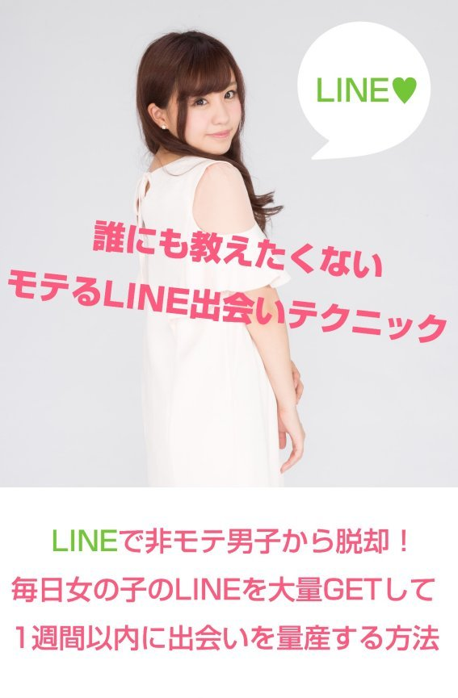
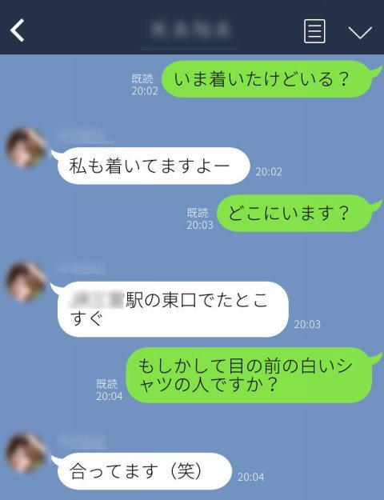
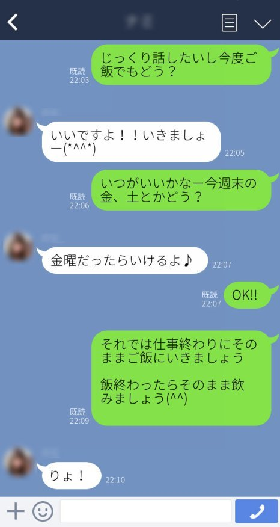
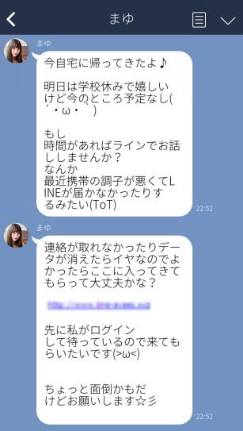

| 誰にも教えたくないモテるLINE出会いテクニック: ーLINEで非モテ男子から脱却！毎日女の子のLINEを大量GETして1週間以内に出会いを量産する方法ー | |
| 吉田 ナオキ | |
| (2017) | |

本書を手にとって頂きありがとうございます。
「女の子との出会いがない・・・」
「今までモテた経験がない・・・」
「女性にどうやってアプローチしていいか分からない・・・」
と女性とのコミュニケーションや、出会いに関してお悩みのあなたへ。
女性と仲良くなったり、女の子と出会いたいという目的の理由は千差万別、人それぞれかと思います。
そんな女性との出会いや、信頼関係を深めていくのに、もはや定番になりつつあるのがスマホアプリのLINEです。
LINEは電話番号や、メアドを教えるのはNGだと言う女性でも「LINE交換しない？」と聞けばわりと簡単に教えてくれることもあって、今では女の子との出会いのツールとして欠かせないものになってきています。
LINEはチャット形式で会話したり、スタンプを送って気軽にやり取りできるので、うまく活用すれば女の子との心の距離もグッと縮まります。
ですがそのLINEも使い方を一歩間違えれば、信頼関係を築けないだけでなく、逆に女性から嫌われてしまい兼ねません。
「LINEで女の子とやり取りが続かない・・・」
「LINEを送っても既読無視になる・・・」
と女性から相手にされない、残念な一方通行の状態に陥ってしまうのです。
本書ではそんな空気を読まないダメLINEをしてしまわないために、僕が数々の失敗を重ねて培ってきた LINEの出会いテクニックや、LINEを使って実際に女性をデートまで誘い出す方法に ついて解説していきます。
さらにオマケですが著者が 女性のLINE IDを大量GETして出会えている場所 なんかについてもご紹介していきます。
著者が 出会いまくっているサイト の情報は巻末に記載しているので是非、参考にしてみて下さいね。
是非、本書のLINEテクニックがあなたの生活を充実させる手助けになって頂ければ幸いです。
吉田ナオキ
■著者運営サイト： LINE IDを毎日ゲットできる掲示板ランキング
■ツイッター： モテるLINE出会いテクニック
■無料メルマガ： 即モテメンになる出会いテクニック講座
■LINE＠： 友だち追加はこちら
もしくは「＠bfz1932v」をID検索（@を付けて検索して下さい）
LINE＠では出会いテクニックの最新情報を配信しています。良ければ友だち追加しておいて下さいね。
※無料メルマガではこの書籍では書けないさらに濃いテクニックや、出会いの情報を発信しています。
さらに メルマガ読者様だけの限定特典 をプレゼントしています。 詳しくは巻末をチェック してくださいね。
目次
興味なしの状態から恋愛対象に格上げさせる駆け引きのテクニックとは？
心理学を活用してLINEだけで女性を誘い出しデートを確定させる方法
第三章 LINEテクニックを活用して出会いを量産できる場所とは？
第一章 知っておきたい女性心理とモテるためのマインドセット
LINEの出会いテクニックを解説していく前に、まずは女性が何を考えているのか理解し、把握しておく必要があります。
この女性心理の部分をすっ飛ばして、小手先の技だけに走っても、折角のテクニックをうまく活用することができません。
ここでは異性に対して女性が何を考えているのか知っておくために女性心理とモテるためのマインドについて解説していきます。
女性はホンネとタテマエを使い分けている？
女性に対するよくある質問に「どんな男性がタイプ？」と聞いたりすることがありますよね。
そんな時に女性から返ってくる答えのほとんどは「優しい男性がいい！」と返すことが多いかと思います。
では実際に優しい男性は世の中の女性からモテているのでしょうか？
確かにモテることの要素の一つに優しいことは必要かもしれません。
ですが世の中の周りを見渡してみても、優しいだけの男性が女性からモテているかと言うとそんなことはありませんよね。
女性は世間体を気にして、人前ではホンネとタテマエを使いこなしています。
「優しい男性が好き」と答えた女性に、今までどんな男性と付き合ったの？
って聞いてみても、実際は過去、ダメ男と付き合っていたりすることが多いです。
優しいだけの男性は、女性からすると無害と感じるため、「男」として意識させることができません。
つまり女性からすると恋愛対象外としてランク外に位置づけされてしまうのです。
女性心理 と4 つの感情レベルとは？
女性心理を理解して、実際に女の子からモテるためには以下の４つの感情レベルを知っておくことが重要です。
① 全く興味なし（空気レベル）
② まだ分からない（友だちレベル）
③ 興味あり（好意レベル）
④ 恋愛感情がある（恋愛レベル）
先程解説した優しいだけの男性は、女性からすると①全く興味なしの（空気レベル）としてしか認識されていないと言うことです。
ネットを活用して、女性と実際に出会うためには③の異性として認識されている（好意レベル）まで自分の位置を上げていく必要があります。
世間的に言われている 優しくてマメな男がモテるというのは、すでに女性があなたに対して好意をもっている場合だけです。
それ以外の段階で優しくし過ぎたり、マメな対応をしても女性からすると、ただうっとうしいだけか、
ただの便利な存在だとしか思われません。
では全く興味なしの段階から、異性として意識させていくためにはどのような方法を用いればいいのでしょうか？
女性を惹きつける感情テクニックとは？
女性に限らず、人が異性を好きになる基本的な仕組みは感情を動かすことです。
いわゆる一般的に言われるツンデレという振る舞いが、こと異性を惹きつけることに関しては必要になってきます。
あえて女性に対して（焦らす、放置、不安）にさせるような突き放す、冷たい態度を取ることで、 ネガティブな感情を植え付けて、気持ちを動かしていきます。
すると、今まで①興味なしの（空気レベル）の段階だったとしても、なぜかあなたのことが気になり始めていくんです。
そして「もしかして嫌われたかな・・・」
と女性が感じた時に、普段どおりに接していきます。
すると女性の気持ちは、 ネガティブな感情から開放されて、安心というポジティブな感情へと心が動いていきます。
普段の優しいだけのあなたとは違う、冷たい自分を演じることで、意図的に女性に対して、いい意味でのギャップを作りだしていきます。
この行為を繰り返すことで、あなたの存在が少しずつ頭の中に残り、やがて異性として気になる③の（好意レベル）まで昇格させていくことが可能です。
興味なしの状態から恋愛対象に格上げさせる駆け引きのテクニックとは？
思わせぶりな発言や、ツンデレな態度をコミュニケーションの時に、少しだけスパイスとして取り入れていくことで、 「なんだかあの人のことが気になるかも・・・」 という意識を女性の中に植え付けていきます。
そのテクニックを取り入れることで、女性があなたと会っていない時まであなたのことを考えてしまうようになり、やがて好意の感情にすり替わっていくのです。
いわゆるこれが恋愛の男女の駆け引きと言われるものです。
見た目はイケてないのになぜか女性には不自由していないという男性っていますよね？
この女性に不自由していない男性は意図的か、または本人が意識していないにしても、この男女の駆け引きの法則を使いこなしているのです。
この女性の感情を動かす男女の駆け引きの法則をLINEテクニックに応用していきます。
この感情を動かす法則を、LINEテクニックに活用することで、今まであなたに無関心でLINEを既読無視して、返信してくれなかった女性からも、返事が返ってくるようにすることが可能です。
さらに使いこなせるようになれば、 LINEだけで口説いて、実際にデートまで誘い出せるようなモテ男に
なることも夢ではありません。
それでは次の章から実際のLINEテクニックについて触れていきたいと思います。
第二章 LIN E で女性との信頼関係を深めるテクニックとは？
「LINEしてもやり取りが続かない・・・」
「LINEしても既読無視が続く・・・」
そんな時はあなたが女性に対して行う、LINEの仕方に問題があるのかもしれません。
自身の行いを振り返り、どんなLINEのやり取りをしたのか改めて考え直す必要があると言えます。
女性 に LIN E を既読無視される理由とは？
なぜあなたの LINEは女性から既読無視される のでしょうか？
もしかすると目当ての女性とLINE交換出来たことに嬉しくなってしまい、特に用事もないのにメッセージを送ってみたり、女性から届いたLINEにも即返事を返したりしていませんか。
巷では女性とLINE交換できたら「マメにLINEを送って信頼関係を作る」とか、「早めに返信したり」、「女子ウケするようなスタンプを送る」ことで相手にいいイメージを与えることができる、なんて言われたりしていますが、実際はそんな簡単なものではありません。
むしろ女性とのLINEに対して、 頑張れば、頑張るほど相手から軽く見られてしまう可能性が高いです。
特に理由もなくLINEを毎日送ることで、「この人私のことが好きなんだな」と相手の女性に必死なイメージが伝わり、相手をするのが面倒だと思わてしまいかねません。
さらに場合によっては
「必死すぎて、ちょっと関わるのがコワイ・・・」
なんて思われてしまうことさえあるんです。
結果、気に入られようと頻繁にLINEを送り続けることで、自分自身であなたの価値を下げてしまうことに繋がるのです。
逆の立場になって考えてみましょう。
特にまだ相手のことが分からない状態で、用事もないのに頻繁にLINEでメッセージが届いたらあなたはどう感じるでしょうか？
とても面倒だと感じるはずだと思います。
それを相手の女性に対して行ってしまっていると言うことです。
女性に使ってはいけな い N Gな LIN E の送り方
その他にも女性に対してNGなLINEのやり方としては、
① LINEで長文を送る
② 返信に困るようなLINEを送っている
③ 相手のことを考ない時間帯にLINEを送る
④ 信頼関係を築く前からいきなりデートに誘う
⑤ 質問ばかりのメッセージを送っている
⑥ ネガティブな内容のメッセージを送っている
⑦ すぐに返信を求める
などの条件が当てはまります。
もしこのNGなLINEの方法を見て、
「自分のことかも・・・」
と、心当たりがあるなら今スグ止めるようにして下さい。
女性とLINEのやり取りを続けて、デートに誘いだすためには、これとは逆の行動を取っていくようにしていきましょう。
それではNGなLINEの送り方についてさらに掘り下げてみていきますね。
①LINEで長文を送る
LINEで長文を送ると 「超面倒なんだけど・・・」と女性から敬遠されてしまいかねません。
LINEでも長文を送ることはできますが、本来チャットアプリなのでショートメッセージでやり取りを行うようなツールになっています。
長文はウザイと思われるのでなるべく簡素なメッセージで送るようにしておきましょう。
②返信に困るようなLINEを送っている
LINEでどうでもいいようなメッセージを送ったりしていませんか？
「今日は電車が遅れたので遅刻しました」、「今日のランチは〇〇を食べました」なんて送っても、
相手の女性からすると「ふーん、そうなの・・・」とそのメッセージに対して返信に困ってしまいます。
相手が返信に困るような、 どうでもいい内容の報告みたいなメッセージは送らないようにしておきましょう。
③相手のことを考ない時間帯にLINEを送る
これも意外とやってしまいがちですが、相手の女性の生活リズムを考えず、深夜にLINEを送ってしまったり、昼の仕事をしているような時間帯にメッセージを送ってしまったりなんてしていませんか？
仮にあなたが夜型の生活リズムだったとしても、相手の女性はそうとは限りません。
LINEのメッセージ自体は残るので、後から確認することはできますが、 一般的にありえない時間帯にLINEすると相手の女性から「非常識なヤツ・・・」と思われる ので止めておきましょう。
④信頼関係を築く前からいきなりデートに誘う
女性とLINE交換できたからと言って、そのテンションでいきなりデートに誘っても
相手の女性がもともとあなたに好意を持っていない限り、うまく誘うことはできません。
女性からそれほど興味がないと思われている段階で、 何度もしつこくデートに誘うと相手にするのがめんどくさくなってしまい、最終的には既読無視の状態が続くようになってしまいます。
ある程度、接触回数をこなして
「この人なら会ってみてもいいかも♪」
と思われる状態にしてデートに誘うようにしておいてくださいね。
⑤質問ばかりのメッセージを送っている
LINEのテクニックの一つに、こちらからのメッセージは「？」で終わるようにするという使い方があります。
相手に対して質問をぶつけることで、相手が返信せざるを得ない状況にもっていくという方法です。
ですが、この「？」の疑問テクニックも毎回全てのメッセージに対して行ってしまうと、相手の女性からすると
「毎回返答しないといけないので重いんだけど・・・」
と負担に思われてしまうかもしれません。
「？」を使う疑問文のテクニックは有効ではあるのですが、諸刃の剣になるので使い過ぎは禁物です。
⑥ネガティブな内容のメッセージを送っている
女性のLINEに対して「今まで彼女がいたことがない」、「会社の上司がムカつく」「寂しいので〇〇ちゃんにかまってほしい」なんて言うネガティブなメッセージを女性に対して送ったりしていませんか？
あまり親しくない状態でこんなネガティブで、カマッテちゃんなメッセージが送られてきたとしたら、女性からすると
「この人とLINEしても楽しくないし・・・」
と避けられてしまうことは間違いありません。
あなたのことに興味が薄い段階で、ネガティブなメッセージが届いたとしても親身になって話を聞いてくれる女性はほぼ皆無です。
ネガティブメッセージは送らないように十分注意しておきましょう。
⑦すぐに返信を求める
LINEはメッセージを読むと、既読がつくので相手がLINEを見たことが客観的にわかります。
「既読が付いたのに、なんで返事が返ってこないんだろう・・・」
と心配になって、すぐに
「もしかして嫌われたかな？」、
「返事待ってます」、
「もう寝たの？」
とか、 しつこく何度もメッセージを送ったりと、相手に返信を促すようなメッセージを送らないようにしてください。
かなりの確率で相手の女性からウザいやつリストに入れられることになるでしょう。
ここまでご紹介してきた女性から避けられるNGなLINEをしないだけでも十分に効果が期待できます。
このLINEの考え方を意識するだけで、女性とLINEでやり取りできる確率を劇的に高めることができますよ。
是非、参考にしてみてくださいね。
感情に訴えかけ る LIN E 焦らしテクニックとは？
さらにここからはLINEだけでも女性との信頼関係を深めていくためのLINEテクニックや、実際にデートまで繋げるための方法について解説していきたいと思います。
異性との信頼関係を深めていくには、相手の女性の感情を動かすことが大切だということを、女性心理の部分でもお話していきましたよね。
当然その感情を動かすテクニックはLINEでも有効です。
LINEでもこの女性の感情を動かすために、一時的にですが「ネガティブな感情」を意図的に作り出すようにしていきます。
普段はわりと早めにLINEを返すようなマメな男を演出しておいて、何回かのやり取りに一度、返信をかなり遅らせていきます。
女性からすると
「いつもすぐに返事があるのに、なんで帰ってこないんだろう・・・」
と少し返事が遅いことが気にかかり、あなたの存在を少しずつ意識し始めます。
この「焦らす」→「不安」→「安心」という、やり取りを何回も続けることで、相手の女性はあなたのことを日常でも考えるように意識が変化していきます。
この不安でネガティブな感情になっている時にあなたのことを考えれば、考えるほど最初は「興味なし」の状態だったとしても、少しずつ「興味あり」の好意レベルの感情へと変わっていくのです。
普段のふとした何気ない瞬間にもあなたのことを考えるようになり、この考えることが頻繁に続くようになれば、女性からすると
「これだけ普段からあの人のことを考えているってことは、もしかすると異性として気になっているのかも・・・」
とバランスの崩れだした心の状態の均衡を保とうと言う働きが女性の頭の中で起こり始めます。
異性として「相手のことが好きなのかも」と論理で自分自身を納得させていくようになります。
後は相手の女性とLINEでの接触頻度を増やして、コミュニケーションを取っていくようにしましょう。
女性との親密度を深めるシンプルな方法とは？
心理学的にもザイオンス効果として立証されているのですが人は、同じ人に接する回数が増えれば増えるほど、その相手に対して好印象を持つようになっていきます。
先程解説した感情を動かすテクニックと、このザイオンス効果を利用していけば、あっという間に相手の女性との心の距離も大幅に縮まっていくことでしょう。
女性との心の距離が縮まってきたら、後は実際のデートまで確定させてしまいましょう。
心理学を活用し て LIN E だけで女性を誘い出しデートを確定させる方法
デートまで持っていく方法として、デートに誘いたい場所の写真をLINEで送るというやり方があります。
例えば、女子ウケするようなカフェや、バー、食事ができる場所の写真を送ってみて相手の反応を確かめていきます。
そこで相手の女性の反応が良ければ、デートに誘い出していきます。
最初の時点で
「いつがヒマ？よかったら食事にでもいかない？」
と誘いだすと相手の女性から「今忙しいからまた今度ね」とサラッと断れてしまう可能性が高いです。
ですが
「今週末空いてる？ ここのご飯めっちゃ美味いからどう？それとも最初から飲みにしとく？ 」
と選択肢を2つ用意して誘うことで女性が断れないような雰囲気に持ち込んでいきます。
この時はあくまで自然に、すでに二人がデートに行くような前提でLINEを送るのがコツです。
この論点をズラす手法はダブルバインドという心理学の二者択一型誘導法というもので、 相手にノーと断りづらい状況に持っていくことが出来る便利なテクニックです。
かなり使えるテクニックなので、いざここぞ、というタイミングで使っていくようにしましょう。
ちなみにデートの日程を決めるのにもこのダブルバインドは使えます。
相手の予定が相手そうな日にちの候補を2択で質問して聞き出していきます。
「今週なら金曜日がいい？、それとも土曜日の方が都合いい？」
と二者択一型誘導法を使って具体的な日にちや、時間を決めていきます。
この時に女性から行くのが面倒だと思わせないために、相手が無理なく行ける範囲にあるターミナル駅を待ち合わせの場所として選ぶのが気遣いであり、ドタキャンの可能性を減らすためのポイントです。
相手の女性があなたと会うことに対して、少しでも負担を減らすように意識してデートに誘い出すようにしてみてくださいね。
適当にデートに誘い出すよりかは、デートを確定させる確率はグンと上がるはずですよ。
少し長くなりましたが、ここまで女性と親密になるためのLINEテクニックについてご紹介してきました。
なんとなく女性とデートを確定させて、出会えるような感じがしてきたのではないでしょうか？
実はこの LINEテクニックを活用して女性との出会いを量産できる場所 があることをご存知でしょうか。
本書の著者である僕自身もこの LINEテクニックを使って、その出会いの場所でかなりの数の女性たちと出会うことに成功しています。
実際に著者が出会った女の子とのLINEトークのほんの一部をご紹介します。


こんな感じで20代の女子大生から、美尻で肉食系のOLや、巨乳な人妻の他、奉仕好きの看護師さんなどなど色々なタイプの女性たちとデートして、その後色々と継続的に楽しんでいるんです。
次の章からはこのLINEテクニックを有効活用できる出会いの場所についてご紹介していきたいと思います。
第三章 LIN E テクニックを活用して出会いを量産できる場所とは？
ここまで女性とのラポール（信頼関係）を構築し、
デートまで誘い出すLINEテクニックについてご紹介してきました。
せっかくなら、このLINEテクニックを今スグ女性に向けて使ってみたいと思いませんか？
LINEテクニックは実際の出会いの場で、色々なタイプの女性達とやり取りを重ねることで、さらに磨かれていくことでしょう。
この章からは 自宅から一歩も出ることなく、女の子のLINE IDをGETできる出会いの場所 についてご紹介していきます。
PCがなくても、スマホだけあればすぐに誰でも実践できる方法なのでぜひ気軽に試してみてくださいね。
リアルの出会いで女性を落とすのが難しい理由
自宅と職場の往復ばかりで女性との出会いが無い・・・とお嘆きのあなたへ。
女の子との出会いを増やすにはどの場所を活用するのが一番ベストなのでしょうか？
そもそも女性との出会いと言っても、色々な方法や出会いの場があるかと思います。
例えば、
友人からの紹介
合コン
出会いパーティー
相席屋
仕事場の同僚
路上ナンパ
キャバクラ
などが女性と出会うための一般的な方法として考えられるかと思います。
確かに元々イケメンで、会話も上手な人ならこれらを活用するのも決して間違いではありません。
でもあなたが女性との会話が苦手で、女の子と接触した経験が少ない場合、知り合えたとしても、より親密な関係へと発展させることはムズカシイかもしれません。
なぜこれらの出会いがオススメできないのか、ここから見ていきましょう。
■友人からの紹介
友人から紹介してもらう場合、何度も頻繁に頼んだり、会わせてもらえるわけではないはずです。
それにたまたま 出会った女の子が可愛くて、そのままうまく付き合えるというケース自体、正直少ないのではないでしょうか。
■合コン
合コンと言っても参加した全ての女の子と絡むことは難しいでしょう。
合コンに来た子が可愛いか、どうかは運の要素が関係してきます。
仮に 一人の女性に絞ってアプローチしたとしても、その女性といい関係になることができなかったら、その時点で終了です。
■出会いパーティー
中規模のパーティーだと30～50人、さらに大きなパーティーでは約100人ぐらいの大規模となります。
もちろん 可愛い女の子は競争率も高く、親密になりプライベートの関係まで持っていくにはかなりの消耗戦になることは覚悟する必要 があるでしょう。
■相席屋
相席居酒屋のような、相席屋も近頃人気ですよね。
時間制限などはありますが、お金を払えばすぐに女の子と会話したり、コミュニケーションを取ることができます。
ここに 出入りしている女性たちはかなり場馴れした女の子たちが多いので連れ出しに成功しても、なかなか最後まで落とすことは難しい と言えるでしょう。
■仕事場の同僚
仕事場の同僚を狙っていくというのは確かに一番手軽でてっとり早い方法かと思います。
自宅と職場だけの往復だけと言う生活スタイルの場合、勤務先以外で女性と知り合う機会がないのでこれも仕方ないのかもしれません。
ですが アプローチして失敗した場合、毎日職場内で顔を合わすので、かなり気まずい関係になってしまうという大きなデメリット があります。
そうなってしまうと職場内でもウワサになり、何とも過ごしづらい環境になってしまうかもしれません。
■路上ナンパ
あなたに巧みな会話術があるならこの路上ナンパもかなり使える戦術になります。
なにしろナンパに成功したらすぐそのまま遊ぶことが出来るからです。
ですが、 高いコミュニケーションスキルや、断られても折れないメンタルを持ち合わせていなければこの路上ナンパには向いていない と言えるでしょう。
さらに路上ナンパを成功させるためには、かなりの人数の女性に声をかけまくらなければならないので、かなり効率が悪いです。
■キャバクラ
それではキャバクラなどの夜のお店はどうでしょうか。
お金を払って指名することで、いつでも気軽に目当ての女の子に会いにいくことができますよね。
ですが相手はプロです。
いい感じにもてなしてくれるので、いっけん自分がモテているような感じがしますが、
仕事として 割り切って接しているだけなので口説いても、いいようにあしらわれて付き合うことはできないでしょう。
これらをまとめると、リアルの出会いには、
「コミュニケーションスキルが必要」
「女性ウケする会話術が必須」
「女性に対面で断られても耐えられる強いメンタルが必要」
といった 異性とのコミュニケーションに関するスキルやマインドが必要になってきます。
元々ある程度、天性で備わっている人なら、先程ご紹介してきた女性との出会い方でも、即成果を出せる可能性があります。
でも、 女性に対して苦手意識があったり、会話ベタの方の場合、正直キツイと言えます。
それにこれらのリアルな場での出会いだと、どうしても 1日に出会える女性の人数は限定されていて、
それほど多くの女の子と一度に絡むことはできません。
どの出会いの方法を選んだとしても、せいぜい出会って仲良くなれるのは一人ぐらいのものでしょう。
さらにそこから発展して、深い関係になれる女性の比率はもっと低い確率になります。
自分好みの可愛い女性と知り合い、親密な関係を築くためには、 異性との出会いに関して積極的な女性が多くいる場所探し が重要になってきます。
出会いに積極的な可愛い女の子と出会える場所とは
出会える絶対数×出会いに積極的な女性
この2つが揃う場所ってどこにあるのでしょうか？
その答えは、 本書の著者も利用しているインターネットの出会い系や、マッチングサイトになります。
ネットを使った出会いには、リアルの出会いの場所とは違って、様々なメリットがあります。
ちなみにメリットを例として上げると以下のようなものが考えられます。
対面で話すわけではないので、会話力はそれほど必要でない。
リアルタイムの会話ではないので、しっかり時間を取って、次の会話の内容を考えることができる。
「こんな可愛い子が？」って女の子が本当に多く利用している
大手出会い系だと会員数1,000万人以上も登録している。
気になる女性が複数いれば、その全員同時にアプローチすることができる。
女性側も異性との出会いを求めて登録しているので会える確率が高い。
スマホやネット環境されあれば、時間や場所に関係なく利用できる。
事前に写真やプロフをよくチェックして好みの女性を選別することができる
などなど、多くのメリットがネットの出会い系には揃っているんです。
でも一般的に、ネットの出会い系って聞くと、
「サクラが多いので出会えないのでは？」
「どうせデブスばかりなんでしょ？」
「援交や、美人局なんかのトラブルに遭うのでは？」
と、ネガティブなイメージを持っている方も中には多いのではないでしょうか。
もちろんネットの出会い系の中には利用しても、全く女の子と出会うこともできず、むしろトラブルに巻き込まれてしまうような悪質な内容のものが入り混じっているのも事実です。
LIN E 掲示板や無料の出会いアプリでは出会えないと言う真実
例えば有名どころで言うとLINEを活用して出会うことができるというLINE掲示板です。
LINEのIDさえあれば、誰でも無料で始められることもあって出会いを求める一部のスマホユーザーたちが利用していると言われています。
ですがこのLINE掲示板、無料ということもあって、悪質な業者関係がかなり出入りしているのが現実です。
さらにこの悪質な業者筋の人間は、LINEを通じて別サイトへ誘導を仕掛けてきます。
また実際に女性とLINE交換できたとしても、暇つぶし目的で利用している女の子たちがほとんどなので、なかなかLINEからそれ以上発展させることは難易度が高く、難しいです。
実際に 著者もこのLINE掲示板に何度か投稿して試してみましたが、どうしても女性と出会うことが出来ませんでした。
LINEでメッセージを送ってきてくれた女性？もいたのですが、そのLINEの内容は誰にでも送っているような定型文のような文章で、いきなりLINEとは別のサイトへと誘導を仕向けてくるようなメッセージがほとんどです。

その他にも無料のスマホ出会いアプリも多数検証してみましたが、利用してみた感想で言うと、個人情報を抜き取られるリスクが高く、女の子と出会うことはほぼ出来ないと言ったような印象でした。
ですが、そんな出会えない系のサイトやアプリばかりと言うわけではなく、優良な出会い系サイトも数多く存在します。
その優良な出会い系や、マッチングサイトとは・・・？
今利用しておかないと損する出会いの場所とは？
出会い系も昔あった怪しいものとは違っていて、今まであったグレーな問題点を解消した、 安全でクリーンな運営をする出会い系サイト へと変化しています。
サクラや、業者がサイト内に入らないようにしっかりと年齢確認を行ったり、24時間の監視パトロールを管理側で行ってくれているのでトラブルに遭遇するリスクも過去と比べると大幅に減少しています。
大手の優良な出会い系サイトでは、人気女性誌や、各種メディア媒体に「恋活」や「マッチングサイト」という括りで広告を打っていることや、スマホが普及したことによって 今まで出会い系などにはいなかったタイプのオシャレで可愛い女の子が多数登録しているのが現状です。
まだ出会い系サイトや、マッチングサイトに登録したばかりで 慣れていないウブな層の女性が多いので、こちらからアプローチしても以前よりも相手の反応率が高い のも特徴です。
以上ここまで見てきたように今、出会い系市場は以前のグレーな時代と比べて利用しても 安全だし、可愛いくてウブな女の子たちと出会えるアツイ出会いの場に変化している のです。
ハッキリ言って今使っておかないと損な出会いの場所だと言えます。
著者が実際に使用して出会えている出会い系サイトをこちらのページでわかりやすく図解入りでまとめました。
是非、参考にしてみてくださいね。
第四章 はじめてでも安心！出会える系サイトの始め方解説
ここまでネットの出会い系が女性と出会うのにかなり使えるものだと言うことを、長々とお話ししてきました。
もし本書をお読みのあなたが、
「出会い系サイトなんて使ったことがないからちょっと抵抗がある・・・」
「女性と出会えることは分かったけど、どうやって始めたらいいの？」
という出会い系初心者だったとしても、 すぐに出会い系サイトを活用できるようにサイトの登録方法から、実際に出会うための流れ についてここからは解説していきたいと思います。
① 出会い系サイトに登録する
② プロフを作る
③ 掲示板で女の子を探す
④ 女の子にメールして仲良くなる
⑤ LINE交換して誘いだす
このシンプルなステップを手順どおりに行うことで、実際に女性と出会うことができるんです。
実は出会い系サイトの無料会員登録に掛かる時間は、スムーズにいけばわずか5分程度で完了するのでぜひ行動に移してみてくださいね。
出会い系の登録方法はいたって簡単です。
まずはサクッとプロフとニックネームを決めて入力します。
次に出会い系では、登録する前に年齢確認を行う必要があります。
出会い系サイトの利用をはじめるためには年齢確認が必須です。
「ちょっとめんどうかも・・・」って思うかもしれませんが、この年齢確認を行うか、どうかは法律によって定められている出会い系サイト規制法を守っている優良な出会い系サイトの証拠とも言えます。
出会い系サイトを未成年が利用しないために身分証明書を提示して、ちゃんと利用できる年齢に達しているということを示す必要があります。
逆に言えば、この年齢確認を行っていない出会い系サイトや、無料の出会いアプリは全て不正を働く法律違反のサービスだと言うことです。
年齢確認などを行っていない出会い系サイトは絶対に利用しないように注意しておきましょう。
年齢確認は（運転免許証・パスポート・健康保健証・住民基本台帳・クレジットカード）などの書類などがあれば問題ありません。
「本名や住所なんかの個人情報を知られることに抵抗があるんだけど・・・」
確かに自分の個人情報を知られるのには少し抵抗ありますよね。
ですが出会い系サイトの登録の場合、必要書類の名前や住所、顔写真は必要ないのでその部分は付箋で隠したり、アプリで加工して見えなくしておけば細かい個人情報を知られることはありません。
年齢、生年月日のみが確認できればOKです。
必要書類はスマホのカメラで撮って、そのままメールで送信するだけで完了です。
【重要！】女子ウケするプロフールの作り方とは？
ここまで出会い系サイトの登録手順について見てきました。
出会い系サイトの登録はすぐに終わりますが出会い系サイトを活用して、女の子と出会うために大切なことがあります。
それは自分のプロフィールを充実させることです。
プロフィールを最初にしっかりと作り込んでおくことで、出会える確率は格段に上がります ので気を抜かずに完成させてしまいましょう。
出会い系で出会える確率を上げるには、女子ウケするプロフィールに設定しておくことが何より大切です。
女の子の側から検索して自分のプロフィールが表示されなければ意味がありません。
正直な素の自分を書くのではなく、女子ウケするようにカスタマイズして作り込むのがプロフの作成のコツです。
平均値よりもやや高め、万人受けするようなプロフィールになるよう作っていきましょう。
女性から見て敬遠されるような趣味（アニメ、アイドル、軍オタ、パチンコ）や、
自己紹介の文章に（寂しがりや、友人が少ない、几帳面、頑固、ネクラ、静か、奥手、マイペース、自己中、短気、人見知り、甘えたい）などのネガティブワードは入れないように注意しておきましょう。
ちなみに女子ウケするような趣味の例で言うと、
・ ビリヤード、
・ ダーツ
・ フットサル
・ ボルタリング
・ 音楽
・ 犬・猫などのペット
・ スノボ
・ サーフィン
・ 旅行
・ 料理
・ アウトドア
・ ドライブ
・ カフェ＆Bar巡り
これらの女子ウケする趣味をプロフィールの中に入れておきましょう。
「趣味というほどでもないけど、入れて大丈夫？」
と思うかも知れませんが、会話としてふられても少し話せるレベルぐらいなら問題ありません。
興味があって「少し知識がある」、「過去に少しだけやったことがある」程度で大丈夫ですよ。
女子ウケキーワードを入れておくことで、自分から公言しなくてもオシャレでイケてるイメージになりますし、この何となく生活が充実してそうっと女性に思わせる雰囲気作りが大切なのです。
一応例としてリア充の雰囲気のするプロフの例と、女子ウケしないプロフの例を載せておくので参考にしてみてくださいね。
■リア充な雰囲気がする自己紹介文
|
はじめまして(^^)
仕事はIT系の営業をしています。将来的には独立したいと考えているので、今色々と学んでいる最中です。
趣味は仕事帰りによるジムでのトレーニングです。最近だと週末はオシャレな雰囲気のBARを新たに開拓してそこで友人たちと飲むのがマイブームになっています（笑）
けど休日に飼っている猫とゆっくりと戯れるのも好きなので、インドアやアウトドアどちらでも大丈夫です(^^)
一緒に仲良く遊べる方とお会い出来ればと考えています。
よろしくお願いします！
|
みたいな感じに生活が充実している感を出していきましょう。
一応、NGな自己紹介文も例として載せておきますね。
■残念でNGな自己紹介文
|
毎日会社の往復だけの生活です。インドア派なのであまり外出せず、休みの日は家でゴロゴロと過ごしています。
ずっと彼女がいなくて寂しいので誰かかまってくださーいm(__)m
|
と分かりやすくするために極端に悪い自己紹介文になっていますが、仮にこれが本当の生活だったとしても、他人が見てネガティブに取られ、自分が不利になってしまうような情報はあえて出す必要はありません。
プロフィールに写真は必ず登録する
自分の顔写真を出会い系サイトに登録するには抵抗があるかもしれません。
ですが、出会いの確率を高めるためにはこのプロフ写真の登録は必ず必要です。
登録する写メは証明写真ではないので、真正面から正直に撮る必要はありません。
登録している女の子たちも自分がもっともカワイク見えるように、うまく工夫して自撮りしています。
斜めから撮影したり何度も自撮りすることで、自分が最もイケて見える奇跡の一枚を登録しておきましょう。
さらにPhoto wonderや、BeautyPlus、SNOWなんかのスマホアプリでうまく加工すればいい感じに仕上がりますよ。
とにかく雰囲気が伝わる写真を登録しておけば全然大丈夫です。
さらに返信率を上げるためにはプロフの作り込みが大切です。
出会い系サイトで女の子のHIT率を上げるために、プロフをさらに詳細に入力していきます。
最初の登録時にあるプロフ入力は簡易的なものですが、登録後にはさらに詳しくプロフを作ることが可能です。
プロフ入力は義務ではありませんが、女の子からの返信率を上げるためにも詳細に作り込んでおきましょう。
実際に女の子に会うために！効率のよいサイトの使い方とは？
ここまで出会い系サイトの登録手順や、プロフの作り方について見てきました。
ここまで完了したら、後は実際にサイト内で女の子にアプローチをしていきます。
どの出会い系サイトでも、最初の登録時に無料ポイントを貰えるのでまずはそのポイントを使ってどんなものか試していきましょう。
出会い系サイトの使い方ですが、 女の子のプロフ検索したり、掲示板に投稿している女の子のプロフを見たりして気になる相手がいたらメールを送っていく のが基本的な流れです。
出会える確率が高い女の子を探すために色々なテクニックがありますが、まずはスタンダードに掲示板を利用していきましょう。
① 掲示板を見ていく
② 気になる相手がいたらプロフを読む
③ プロフを読んだらメールを送ってみる
と、この手順で進めていきましょう。
出会い系サイト内の掲示板にはサイトに登録したての女の子や、積極的に出会いを求めている女性による書き込みが多いです。
当然アクティブユーザーなので、当てずっぽうに女の子を探すよりも返信率は高いと言えます。
さらに出会える確率を上げる立ち回りのテクニックとは？
出会い系サイトを効率的に使うための、基本的な流れについて見てきました。
通常はこの流れを守っていれば問題ありませんが、さらに女の子との出会いの確率を上げるためにもう少し掘り下げて出会い系サイトの立ち回り方について解説していきます。
■毎日必ず一度はログインしておく
出会い系サイトに登録したら、必ず一日一回はログインしておきましょう。
毎日コマメにログインしておくことで、アクティブユーザーとしてサイトのTOP画面に表示される可能性が高まります。
TOP画面に表示されることで、あなたのプロフの露出度が上がるで、その分だけ相手の女の子たちにアプローチする機会が増えるということです。
女の子にプロフを読んでもらえなければ、存在を知ってもらえずかなりの機会損失になるので気づいたらマメにログインしておくようにしておいた方がいいですね。
■一日一回、掲示板に投稿する
出会い系サイトの多くは掲示板内の投稿を一日一回無料で行えるようになっている場合が多いです。
せっかく無料で投稿できるわけですから、ムダにすることなく掲示板に書き込んであなたの存在をアピールしておきましょう。
出会い系サイトの掲示板は投稿順に表示されています。
つまり毎日掲示板に投稿することで、あなたの書き込みが掲示板の上位に表示されて女の子からプロフを見られやすくなると言うことです。
■日記やつぶやきも活用しておく
掲示板を活用して女の子にアプローチしていく方法を解説してきましたが、さらに出会いの確率を上げていくために日記とつぶやきも利用していきましょう。
出会い系サイト内にあるSNS機能として「日記」と「つぶやき」があります。
「日記」はいわゆるブログと同じようなものです。
自分が思ったことや、今日の出来事なんかを書いて投稿することができます。
日記を投稿しておくことで、女の子からもどんな人なのか雰囲気を知ってもらうことができるんです。
相手の日記を読んで「いいね！」したり、コメントをつけることができるのでそこから自然に仲良くなっていく方法もあります。
同じように「つぶやき」もTwiterみたいな感覚で短文を投稿することができる機能です。
思いついたことをすぐに投稿することができるし、相手のつぶやきからアクティブ会員かどうかを判断することができるので、立ち回り次第ではかなり使える機能だと言えます。
日記とつぶやきはどちらも無料で利用できるので、時間の余裕があれば積極的に活用してみてくださいね。
足あとや、タイプ一覧（お気に入りされているリスト）を活用する
出会い系サイトを活用するための方法として「足あと」や「タイプ一覧」（お気に入りされているリスト）があります。
この足あとや、タイプ一覧機能は、あなたのプロフを気になって訪れた人が表示される仕組みになっています。
この足あとやタイプ機能に表示されるということは、わずかにでもあなたのことが気になって一度プロフを読んでくれた女性のはずです。
つまりその履歴に残っている相手を辿って、アプローチをかけていけば適当に探すよりかは遥かに出会える確率が高いと言うことです。
アプローチする機会を逃さないためにもこの機能を利用していきましょう。
利用前に必ず知っておきたいサイトの注意点とは？

ここまで出会い系サイトの活用法について色々と見てきました。
出会い系サイトには本気で異性との出会いを求めている女性がいる以外に、残念ながら絡んではいけない相手も僅かながら含まれています。
その相手とは「キャッシュバッカー」と「業者」の存在です。
キャッシュバッカーとはいったいどんなものなのか？
キャッシュバッカーとは出会い系サイトで溜まるポイントを現金化したり、景品交換することが目的の女性のことです。
略語で「CB」とも呼ばれています。
出会い系サイトの多くでは、男性とメールすることで女性側にポイントやマイルが貯まっていくようなシステムになっています。
全然出会う気もないのに向こうからメールを送ってきたり、積極的にアプローチをかけてくる場合はキャッシュバッカーを疑ってみた方がいいでしょう。
どんな業者がいるのか？
優良な出会い系サイトにもわずかながらも、素人の女性会員を装って悪徳な業者が登録してるのが実情です。
業者をざっくりと2種類に分けると、「誘導業者」と「援デリ業者」に分かれます。
誘導業者は無理やり理由をこじつけて、自社が運営する詐欺サイトへと登録を促すように誘導してきます。
援デリ業者は違法な風俗店の客引きなので、関わっても当然素人の女の子と出会うことはできません。
キャッシュバッカーや悪徳業者かを見極めるためにはどうすればいいのでしょうか？
出会い系サイトに慣れてくると見極める目が養われてきますが、最初のうちは少し悩むかもしれません。
ただどちらの業者の特徴に共通して多いのが極端に可愛い女の子のプロフ写メを使っていると言うことです。
だいたい神レベルに可愛い女の子で、初回のメールからLINEのIDが送られてきた場合には業者と見て間違いありません。
その他にも あなたのプロフ確認せず、足あとや、タイプをつけずいきなりメールを送ってくる相手 には注意する必要があります。
普通に考えるとあなたのことを気に入った女性が取る行動とすれば、プロフを読む→タイプをつけるになるはずです。
その流れを無視してプロフを読まずに、いきなりメールを送ってくる相手はかなりCBや悪徳業者の可能性が高いと言えます。
せっかくのあなたのポイントや、時間をムダにしないためにも相手にしないように気をつけておきましょう。
女性から返信率を劇的に高めるアプローチの方法とは？
ここからは実際に掲示板内で見つけた女性にアプローチの仕方について見ていきましょう。
基本的にはまだ出会い系に登録したばかりで慣れていない女性をターゲットとして狙っていくのですが、
その彼女たちでさえも、男性からかなりの数のメールを貰っている可能性があります。
著者が実際に会った女性に「どれぐらいメールって届くの？」と聞いたところ、「日によって違うけど、100通とか全然余裕であるよー」と言っていました。
多い女性だと200通以上も届いている子もいるそうです。
「その中でもどんなメールだと返信を返すの？」と訪ねてみたところ、
「やっぱちゃんと私のプロフィールを読んでメールしてくれてるって感じたら返信してるよ♪」 と言う答えの女性が多いような印象でした。
後それ以外の最初からタメ口で上から来る「オレオレメール」や、自慢ばかりの「ナルシストメール」、下ネタ全開の「エロメール」や、プロフを覗いたらしっかりと作っていない人なんかには返信していないとのことでした。
つまり100通も届くメールの中で返信率を上げようと思えば、 相手の女性のプロフをちゃんと見て、
それに合った内容のメールを返す ことがポイントになっているということです。
と、言ってもそんなに難しいことではありません。
女性のプロフを見て、
「Aさんの○○な趣味いいですね！」
「Bさんって○○なイメージですね。」
など気になるポイントがあればそれについて触れてみるとか、プロフ写真を見た印象をメールに添えておくだけでも十分に効果があります。
もしその時に 自分と共通点があるなら、かならずメールの文章に盛り込んでいきましょう。
女性のプロフィールを見て、自分と趣味が同じならそこを理由にメールしたとか、些細な共通点でも大丈夫です。
相手の女性が「旅行」が好きなら、旅行についてふれてみるとか、「映画」が好きなら映画について、
「ペット」で犬を飼っているなら、その部分について「うちも犬飼ってます！」とかその程度でもメールの文章に入れていきます。
それがフックとなってメールを送った女性に引っかかるかもしれません。
人は自分と共通点がある時に親近感を感じます。
例えば普段の日常でもたまたま知り合った人の出身地が自分と同じ場所なら、話が盛り上がって急に仲良くなったりすることってありますよね？
それと同じで出会い系のメールでも同じようにその共通点から心の距離をグッと縮めることは可能です。
いわゆる心理学的に言うラポール（信頼感）を戦略的に築いていくことが大切です。
特に大したスゴ技なんかではありませんが、逆に言えば出会い系に登録しているその他の男性は、当たり前のそれぐらいのことすら出来ていない人が多いと言うことです。
少しの手間をかけるだけで、かなり返信率は高まるので面倒がらずに一手間加えていきましょう。
どちらにせよ、返信があってから会話を繋いでいくためにも相手のプロフを一応でも読んでおくことは必要になってくるので必ず一度は目を通しておいてくださいね。
送る時の注意点としては、最初から個人情報を聞きすぎないと言うことです。
ある程度接触頻度を増やし、仲良くなってからじゃないと、「仲良くなってないのになんでそんなことまで教えないといけないの」と女性から拒否されるかもしれないからその点は注意しておいて下さいね。
敬 語→ タメ語に移行してより親密度を深める
ある程度メールでコミュニケーションを重ねた後は、さらに親密度を深めていくため、敬語から、もっとゆるいタメ語に移行していきます。
やはり敬語よりも、 ある程度くだけた友だち口調の方が、ちょっとした冗談も言いやすいし、相手の女性からしても気軽に話せるのでさらに良好な関係を築くこと が出来るんです。
もちろん、タメ語に移行したからと言って、いきなり上から目線になると言うことではありません。
あくまで女性に対して紳士的なスタンスを保ったまま友だち口調を使うと言うことです。
敬語を使いながらたまにタメ語を交ぜてみたりして移行していく方法もありますが、一番てっとり早いのは直接相手の女性に「敬語なしで話しませんか？」と聞いてみることです。
ある程度メールでやり取りを重ねて、打ち解け始めた段階ならまず相手の女性からNGをくらうことはまずありません。
相手の女性からしても気を使わずラクに会話をすることができるので基本的にOKしてくれるはずですよ。
たまに女の子の中には「○○さんだけタメ語で、私の方はそのまま敬語でもいいですか？」と言ったパターンもありますがその場合は気にせずその提案を受けて接していけば大丈夫です。
LIN E へ自然に誘導するためのコツとは？
ここまでメールでやり取りを重ねたことでかなり女性との距離は縮まっているはずです。
後は出会い系サイトのメールから、直接やり取りができるLINEに移行していきます。
LINEに移行するコツとしてはあくまで自然に誘導していくということです。
「LINEで連絡した方が楽だし、良かったらLINEで話すようにしない？」
「サイトのメールだと気付くのが遅れるし、これからはLINEで話そう(^^)」
「いちいちログインするのが大変だからLINEにしない？」
と言った感じでLINEを使ってやり取りした方が、「楽で便利」と言った雰囲気を作り出して誘導していきます。
サラッと自然にLINE交換を持ちかければ、まずこの時点でダメ出しを受けることはないはずです。
後は前のLINEテクニックの章で話した方法で相手の女性をデートに誘い出して、出会う日程を確定させてしまいましょう。
ここまで出会い系サイトの登録から女の子と出会うための流れについて色々と見てきました。
最初は慣れないこともあって、少し戸惑うこともあるかもしれませんが毎日ログインしておけば誰でもすぐに使いこなせるようになれますよ。
① 出会い系サイトに登録する
② プロフを作る
③ 掲示板で女の子を探す
④ 女の子にメールして仲良くなる
⑤ LINE交換して誘いだす
といたってシンプルなので、焦らず少しづつ馴染んでいってくださいね。
ここまで読んでくれたあなたに必要なのは行動することだけです。
（著者は出会い系サイトを活用できているおかげで、毎日女の子とLINE交換して出会うことに成功していますｗ）
是非、あなたもここまでの情報を活用して、出会い系サイトをフル活用してみてくださいね。
無料の掲示板や、無料の出会いアプリでは、時間と労力だけ浪費してなかなか女の子と出会うことはできません。
あなたが掲示板に費やしている間に、出会い系サイトの女の子たちは他の男性と連絡を取り合って退出していくかもしれません。
まずは登録だけでも先にすませておくことをおすすめします。
そして、素敵な人と出会える確率を上げる秘訣は、優良出会い系サイト全てに同時登録して多数展開して利用することです。
それでは、あなただけのステキな出会いを見つけて下さいね♪
おわりに
今では本命彼女も出来た上に、遊ぶための女の子も不自由しない生活を過ごしている毎日ですが、以前の僕は女性との恋愛経験も少なく、口下手でモテないダメ男でした。
そんな女性との出会いに関して悩んでいた当時の僕ですが、職場の友人から教えてもらったネットの出会い系サイトの存在を知ったことをキッカケに、その後人生が大きく変化していきました。
ただいきなりすべてが 順風満帆というわけにはいかず、当時は時間と労力を掛けても全く出会えないという経験を何度も体験してきました。
その中で挫折しそうになったこともありましたが、何とか諦めずに日々自分なりに実験や検証を繰り返してきた結果、出会う確率を格段に上げるための方法と場所を見つけたのです。
その方法を自分なりにまとめ、書き上げたのが本書のテーマでもあるLINEのテクニックであり、そのテクニックを活かせる出会いの場についての解説です。
本書とご紹介してきたLINEテクニックと、優良出会い系サイトの２つさえ知っていれば、
誰でも今日から実践できる内容になっているかと思います。
ネットの出会い系には日常生活ではまず接点さえないような可愛い女性と出会うことができます。
ネットでの出会いはリアルの出会いと比べると全然イージーなので、僕のような中の下のビジュアルしかない男性でも可愛い女の子たちと不自由なく、出会うことに成功しています。
ちなみにこれは僕だからできるものではありません。
あなたとの違いは、ただネットで女性と出会える場所と、口説くためのテクニックを知っているか、どうかだけの差です。
次はあなたが行動して結果を得る番です。
過去の僕のように無駄な労力や時間を費やしてもらいたくないために作ったのがこの書籍です。
ぜひ本書の内容を参考にして行動に移してみてくださいね。
きっとあなたも1週間後には実際に女の子と出会えて、3ヶ月後には女性には不自由しないような生活が待っているはずですから・・・
著者プロフィール
著者：吉田ナオキ
人一倍女の子に興味があるクセに学生時代を含め、特に女性からモテた経験もなし。
ビジュアルも能力も特に普通な30代のIT系営業職。
社会人になってから女性との出会いが無いことに嘆いていた矢先、職場の仲のいい友人からネットを使って女の子と出会える方法を教えてもらう。
この友人からのアドバイスがきっかけとなり、ネットの出会い系や、マッチングサイトにハマる。
最初は全く女性と出会うことはできなかったが多くの失敗を経験して、自分なりにネットの出会い方のコツを掴む。
今では出会い系ノウハウや、LINEテクニックを駆使して日々遊ぶ女性には不自由しないぐらいの生活を築くことに成功する。
過去の自分のような出会いがない、女性にモテたことがないという人に少しでも役立てればと言う思いから、自身の出会い体験や女性心理を抑えたLINEテクニックを専門にTwitterや、自身のサイトで情報発信を行う。
加えて恋愛や異性とのコミュニケーションに悩む方に向け、対面での個別カウンセリングや、有料の電話相談、個別メールサポートなどのサービスを提供し、日々活動を行っている。
今回は、著者が普段行っているLINE出会いテクニックを体系化し、電子書籍という形で出版することを決意する。
【著者が利用している本当に出会える優良出会い系サイト】
著者が利用している優良出会い系サイトは以下から登録することが可能です。
出会い系を活用して、出会うためのコツは複数サイトに登録して出会う確率を高めることが基本です。
「どの出会い系がいいのかな？」と迷ったら、登録するのは完全無料なので気になるサービス全てに登録することをオススメします。
|
■PCMAXは こちら ■Jメールは こちら ■ハッピーメールは こちら ■ワクワクメールは こちら ■YYCは こちら |
※登録方法は「著者運営サイト」の方で詳しく解説しています。良ければ参考にしてみて下さいね。
↓↓↓
■著者運営サイト： LINE IDを毎日ゲットできる掲示板ランキング
■ツイッター： モテるLINE出会いテクニック
■無料メルマガ： 即モテメンになる出会いテクニック講座
■LINE＠： 友だち追加はこちら
もしくは「＠bfz1932v」をID検索（@を付けて検索して下さい）
LINE＠では出会いテクニックの最新情報を配信しています。良ければ友だち追加しておいて下さいね。
メルマガ読者だけの限定特典をプレゼント！
※無料メルマガではこの書籍では書けない さらに濃い恋愛テクニックや、セ●レや、不倫妻との出会い方 の情報を発信しています。
この無料メルマガでは以下のような内容をお伝えしています。
|
モテるための女性心理 恋愛相手を見つける方法 LINEで女性を口説くコツ メールで異性を魅了する方法 デートで失敗しないためのコツ 女性にモテるファッションについて 女性にモテるためのマインドセット 失敗しない出会い系サイトの使い方 セ●レをゲットする方法 人妻とヤルためのテクニック |
・・・などなどこれ以外にも多くの情報を配信しています。
さらに メルマガ読者様だけの限定特典「セ●レをゲットできる出会い系サイトマニュアル」 をプレゼントさせて頂いています。
ただし、 この限定特典はAmazon無料キャンペーン期間中だけのものなので、キャンペーン期間が終了すれば入手することは出来ないかも知れません。
是非、無料でお得な特典が手に入る間に登録して下さいね。